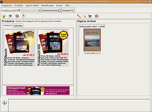
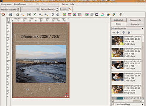

FotobuchProfi
Dieser Artikel wurde für die folgenden Ubuntu-Versionen getestet:
Ubuntu 14.04 Trusty Tahr
Zum Verständnis dieses Artikels sind folgende Seiten hilfreich:
Die Software FotobuchProfi  ermöglicht die native Erstellung eines Fotobuches unter Linux. Mithilfe des Programms lassen sich Fotobücher und Kalender bequem und individuell gestalten und diverse Layouts und Gestaltungselemente helfen bei der Erstellung des Fotobuches. Die Auftragsabwicklung erfolgt direkt aus dem Programm heraus.
ermöglicht die native Erstellung eines Fotobuches unter Linux. Mithilfe des Programms lassen sich Fotobücher und Kalender bequem und individuell gestalten und diverse Layouts und Gestaltungselemente helfen bei der Erstellung des Fotobuches. Die Auftragsabwicklung erfolgt direkt aus dem Programm heraus.
Durch die Nutzung von Java ist die Software plattformübergreifend nutzbar.
Voraussetzungen¶
Das Programm erfordert eine Java-Laufzeitumgebung (JRE), welche mindestens der Version 1.5 (Java 5) oder neuer entsprechen sollte. Bei Problemen mit dem OpenJDK kann man auf Oracle Java ausweichen.
Installation¶
Anschließend lädt man sich die Datei FotobuchProfi.jar von der Anbieterseite herunter.
Hinweis!
Fremdsoftware kann das System gefährden.
Nutzung¶
 Die Software wird durch einen Klick auf die Datei FotobuchProfi.jar geöffnet. Dabei sollte man darauf achten, dass die Datei nicht als Archiv, sondern mit einer Java-Runtime geöffnet wird. Alternativ kann man folgenden Befehl in einem Terminal-Fenster verwenden:
java -jar /PFAD/ZUR/FotobuchProfi.jar
Nach einer kurzen Ladezeit öffnet sich ein Startfenster. Dieses Fenster gliedert sich grob in drei Bereiche. Im linken oberen Bereich befindet sich eine Produktübersicht. Dort werden die einzelnen Produkte mit einer kurzen Erläuterung vorgestellt. Durch einen Reiter kann man zwischen den Kategorien "Fotobuch" oder "Kalender" wählen. Mit einem Doppelklick auf ein Produkt wird eine entsprechende Vorlage geladen.
Der untere Bereich liefert zusätzliche Informationen über ein Produkt, wenn man dieses in der Produktübersicht einmal anklickt. Dazu zählen: welches Cover kann gewählt werden, wie viele Seiten können minimal / maximal erstellt werden, welche Abmessungen das Produkt hat.
Im oberen rechten Bereich wird ein bereits gespeichertes Fotobuch angezeigt. Durch doppeltes Anklicken wird es geöffnet und man kann daran weiterarbeiten. Alternativ kann man im Menü "Eigene Artikel" auf "Artikel bearbeiten" klicken.
 Hat man eine entsprechende Vorlage geladen, öffnet sich eine Seitenübersicht der Vorlage. Um eine Seite zu bearbeiten, wird diese angeklickt. Dann klickt man auf den obigen Reiter "Designer". Ein dreigeteiltes Fenster erscheint. Im linken Teil wird die gewählte Seite dargestellt. Rahmen für Fotos und Textfelder können angeklickt, verschoben und vergrößert / verkleinert werden. Im rechten Teil befindet sich eine Leiste. Je nachdem welchen Reiter man dort anklickt, erfüllt sie mehrere Aufgaben.
Durch den Reiter "Bilder" werden Fotos angezeigt, welche per Drag & Drop in den Bilderrahmen eingefügt werden.
Mit dem Reiter Layouts werden diverse Seitenlayouts präsentiert. Mit einem Doppelklick werden die Layouts eingefügt. Der Reiter "Bibliothek" erlaubt, sofern man online ist, einen Zugriff auf Online Ressourcen des Herstellers. Dort können zusätzliche Hintergründe und Textzitate durch Drag & Drop in die Fotobuchseite eingefügt werden. Das Programm fragt beim ersten Mal, ob die Online Kommunikation gestattet werden soll.
Der letzte Reiter "Elementinfo" gibt Eigenschaften und Werte über Text- und Bildrahmen aus.
Im oberen Bereich sind Reiter, eine Menüleiste und etliche Icons zu finden. Die Reiter erlauben das Umschalten zwischen Designer, Seitenansicht und Programmauswahl. In der Menüleiste können unter Programm einige Einstellungen vorgenommen werden, unter Bestellungen Artikel bestellt oder gelöscht werden und die Bereiche "Extras" und "Hilfe" bieten Hilfestellungen zur Nutzung des Programms bzw. Angaben zum Urheber des Programms
Hinweis:
Obwohl man im Menüpunkt Programme seine Arbeit speichern kann, ist dieses nicht notwendig, da das Programm selbständig Änderungen abspeichert.
Problembehebung¶
Beim Start der Software kann es passieren, dass das Programm warnt, es habe zu wenig Arbeitsspeicher. Dies kann man beheben, indem man das Programm mit folgendem Befehl im Terminal [2] startet:
java -Xmx1024M -jar FotobuchProfi.jar
Man sollte auch darauf achten, das Programm über das Menü "Programme -> Beenden" zu schließen. Schließt man es anderweitig, erscheint ein leeres Fenster, welches man wegklicken muss. Außerdem kann es passieren, dass einige Elemente nicht korrekt dargestellt werden. Durch Schließen und wieder Anklicken der Elemente werden sie wieder richtig dargestellt.
Deinstallation¶
Möchte man die Software wieder vom PC entfernen, so müssen im Homeverzeichnis die Datei FotobuchProfi.jar und der Ordner ~/Photux gelöscht werden.
 Übersichtsartikel
Übersichtsartikel- Erstellt mit Inyoka
-
 2004 – 2017 ubuntuusers.de • Einige Rechte vorbehalten
2004 – 2017 ubuntuusers.de • Einige Rechte vorbehalten
Lizenz • Kontakt • Datenschutz • Impressum • Serverstatus -
Serverhousing gespendet von